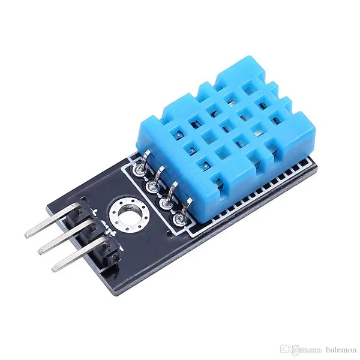
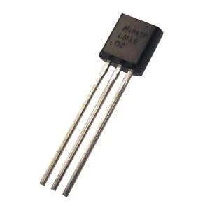
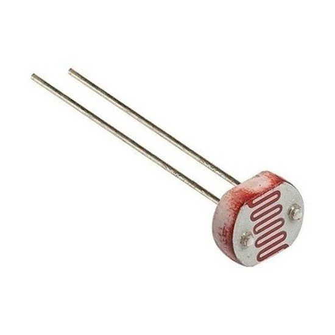
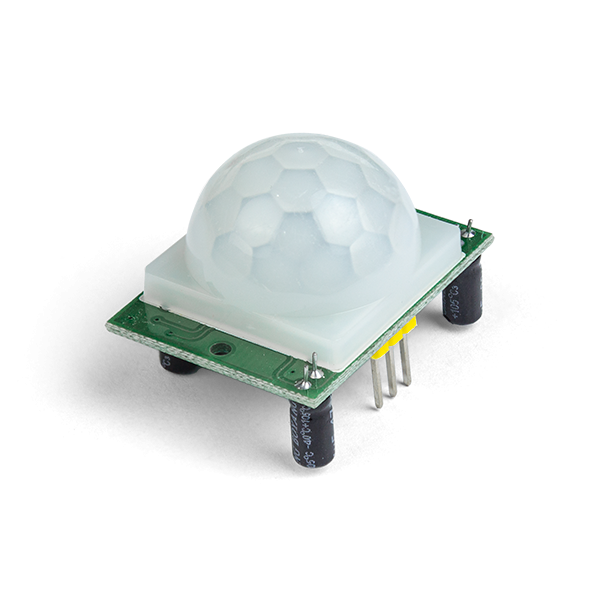
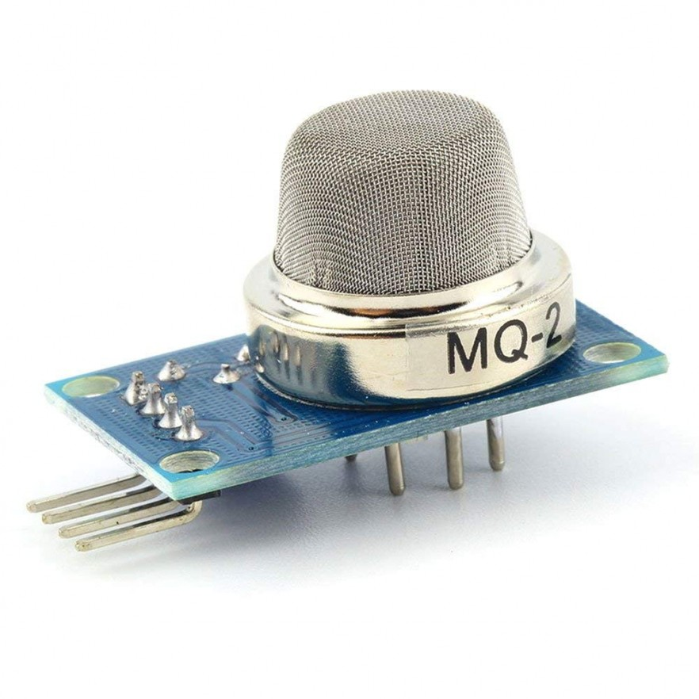
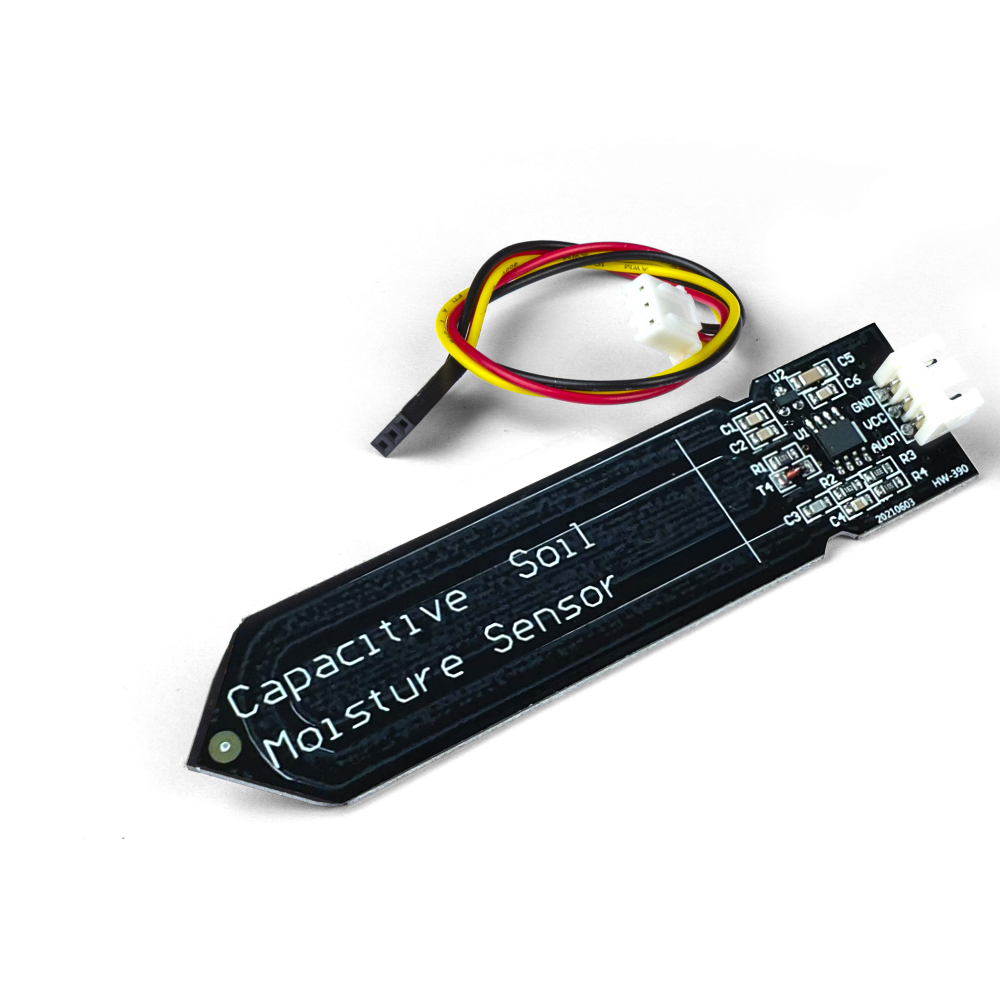
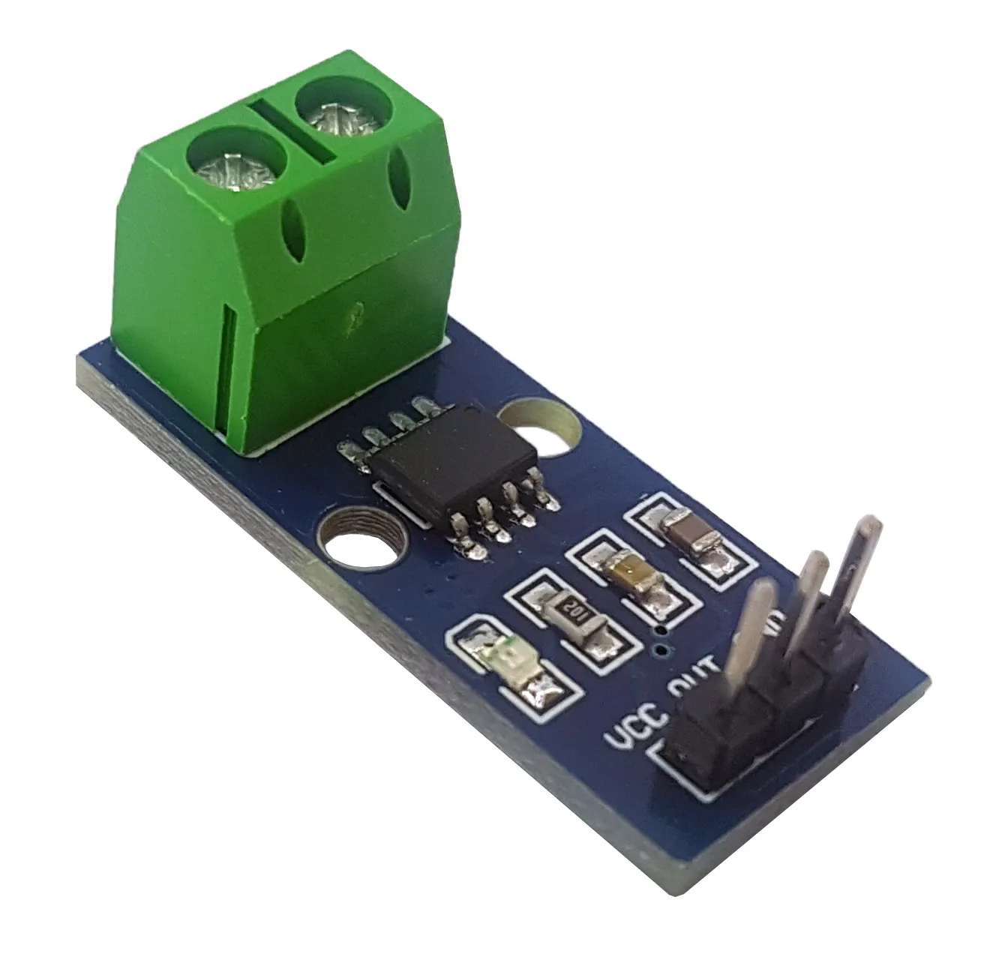
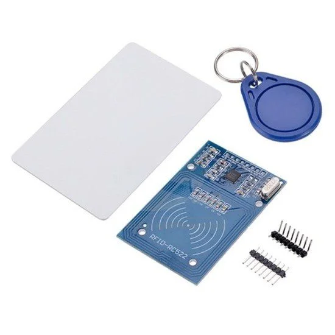
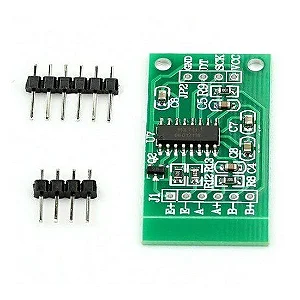

Sensoriamento
DHT11

| Nome | DHT11 |
|---|---|
| Categoria | Temperatura e Umidade |
| Conceito | Sensor digital compacto para medição simultânea de temperatura e umidade relativa do ar ambiente. |
| Princípio de funcionamento | Utiliza um elemento capacitivo para a umidade e um termistor NTC para a temperatura. Um microcontrolador interno de 8 bits processa o sinal analógico e envia os dados já em formato digital. |
| Especificações técnicas | Tensão de 3,3V a 5,5V DC; faixa de temperatura de 0 °C a 50 °C (precisão ±2 °C); faixa de umidade de 20% a 90% UR (precisão ±5%). |
| Tipo de sinal | Digital (protocolo serial proprietário de via única / 1-Wire). |
| Aplicações industriais/IoT | Estações meteorológicas, automação residencial, monitoramento de depósitos e estufas agrícolas. |
| Exemplo de uso em projeto | Climatização automática de estufa que aciona exaustor e umidificador quando a temperatura passa de 30 °C ou a umidade fica abaixo de 40%. |
| Fabricantes/Modelos | Aosong Electronics, Adafruit, Keyestudio, módulos genéricos. |
LM35

| Nome | LM35 |
|---|---|
| Categoria | Temperatura |
| Conceito | Sensor analógico de temperatura de precisão com sinal de saída linear e proporcional à escala Celsius (°C). |
| Princípio de funcionamento | Utiliza o comportamento térmico de transistores internos. A tensão de saída varia à taxa constante de 10 mV para cada 1 °C. |
| Especificações técnicas | Tensão de 4V a 30V DC; faixa de medição de -55 °C a +150 °C; precisão de ±0,5 °C em temperatura ambiente. |
| Tipo de sinal | Analógico. |
| Aplicações industriais/IoT | Proteção térmica de motores, fontes de alimentação, dataloggers e equipamentos médicos. |
| Exemplo de uso em projeto | Monitoramento de temperatura em fonte de alimentação que aciona um relé de corte de energia se atingir 70 °C. |
| Fabricantes/Modelos | Texas Instruments, National Semiconductor, STMicroelectronics. |
LDR (Fotoresistor)

| Nome | LDR (Light Dependent Resistor) |
|---|---|
| Categoria | Luminosidade |
| Conceito | Componente passivo cuja resistência elétrica diminui à medida que a intensidade de luz sobre ele aumenta. |
| Princípio de funcionamento | Baseado no efeito fotocondutivo do Sulfeto de Cádmio (CdS). A luz incidente libera elétrons no material semicondutor, reduzindo sua resistência. |
| Especificações técnicas | Resistência no escuro de ~1 MΩ; resistência na luz de ~1 kΩ a 10 kΩ; tensão máxima de 150V DC. |
| Tipo de sinal | Analógico (usado com circuito divisor de tensão). |
| Aplicações industriais/IoT | Relés fotoelétricos de iluminação pública, ajuste automático de brilho de telas e alarmes ópticos. |
| Exemplo de uso em projeto | Luminária solar de jardim que detecta a ausência de luz natural e acende LEDs automaticamente ao anoitecer. |
| Fabricantes/Modelos | Série GL5516, GL5528, Bourns, Senba Optical. |
HC-SR04

| Nome | HC-SR04 |
|---|---|
| Categoria | Distância |
| Conceito | Módulo ultrassónico para medição de distância e detecção de obstáculos sem contato físico. |
| Princípio de funcionamento | O pino Trigger emite um pulso sonoro em 40 kHz que reflete no objeto e retorna ao pino Echo. A distância é calculada pelo tempo total de viagem do som. |
| Especificações técnicas | Tensão de 5V DC; alcance de 2 cm a 400 cm; precisão de ±3 mm; ângulo de medição menor que 15°. |
| Tipo de sinal | Digital (pulsos de temporização nos pinos Trigger e Echo). |
| Aplicações industriais/IoT | Robótica móvel, medição de nível de reservatórios abertos e contagem de itens em esteiras. |
| Exemplo de uso em projeto | Robô aspirador de pó que identifica paredes a menos de 10 cm de distância e altera sua trajetória para evitar colisão. |
| Fabricantes/Modelos | SparkFun, Elecfreaks, OSEPP, módulos genéricos. |
PIR HC-SR501

| Nome | PIR HC-SR501 |
|---|---|
| Categoria | Movimento / Presença |
| Conceito | Sensor infravermelho passivo que detecta a movimentação de corpos que emitem calor. |
| Princípio de funcionamento | Capta variações da radiação infravermelha por meio de um cristal piroelétrico auxiliado por uma lente de Fresnel. |
| Especificações técnicas | Tensão de 4,5V a 20V DC; alcance ajustável de 3 a 7 metros; ângulo de visão menor que 120°. |
| Tipo de sinal | Digital (saída HIGH em 3,3V ao detectar movimento / LOW em repouso). |
| Aplicações industriais/IoT | Sistemas de alarme residencial/comercial, iluminação temporizada em corredores e presença em salas. |
| Exemplo de uso em projeto | Lâmpada inteligente que acende assim que uma pessoa entra no ambiente e desliga 30 segundos após cessar o movimento. |
| Fabricantes/Modelos | Adafruit, DFRobot, Parallax, módulos OEM. |
MQ-2

| Nome | MQ-2 |
|---|---|
| Categoria | Gás / Fumaça |
| Conceito | Sensor eletroquímico para detecção de gases inflamáveis, combustíveis e fumaça no ambiente. |
| Princípio de funcionamento | Possui uma camada de Dióxido de Estanho ($\text{SnO}_2$) aquecida. Na presença de gases como GLP, propano ou fumaça, a condutividade do material aumenta. |
| Especificações técnicas | Tensão de 5V DC; faixa de detecção de 300 a 10.000 ppm; consumo do aquecedor de ~800 mW. |
| Tipo de sinal | Analógico e Digital (com pino de limite ajustável por comparador interno). |
| Aplicações industriais/IoT | Detectores de vazamento de gás de cozinha, prevenção de incêndios e segurança industrial. |
| Exemplo de uso em projeto | Alarme de vazamento de gás que aciona um alarme sonoro e envia notificação no celular caso detecte concentração anormal de GLP. |
| Fabricantes/Modelos | Zhengzhou Winsen Electronics, Waveshare, Keyestudio. |
Sensor Capacitivo de Umidade do Solo

| Nome | Sensor Capacitivo de Umidade do Solo |
|---|---|
| Categoria | Umidade (Solo / Agricultura) |
| Conceito | Dispositivo projetado para medir o nível de água presente no solo por meio de medição capacitiva. |
| Princípio de funcionamento | Mede as alterações na constante dielétrica do meio. Como não há exposição direta dos eletrodos ao solo úmido, evita o desgaste por corrosão/eletrólise. |
| Especificações técnicas | Tensão de 3,3V a 5,5V DC; tensão de saída analógica entre 1,2V e 3,0V; placa resistente à corrosão. |
| Tipo de sinal | Analógico. |
| Aplicações industriais/IoT | Agricultura de precisão, irrigação automatizada em larga escala e vasos inteligentes. |
| Exemplo de uso em projeto | Sistema de irrigação que analisa a umidade da terra e aciona uma bomba d'água apenas quando o solo estiver seco. |
| Fabricantes/Modelos | DFRobot, Keyestudio, placas genéricas. |
ACS712

| Nome | ACS712 |
|---|---|
| Categoria | Corrente Elétrica |
| Conceito | Sensor com isolamento elétrico baseado no Efeito Hall para medição de corrente contínua (CC) e alternada (CA). |
| Princípio de funcionamento | A corrente passa por uma trilha interna de cobre gerando um campo magnético proporcional, que é convertido em sinal de tensão pelo circuito interno. |
| Especificações técnicas | Tensão de 5V DC; disponível em modelos para 5A, 20A ou 30A; sensibilidade de 185 mV/A (versão 5A) até 66 mV/A (versão 30A). |
| Tipo de sinal | Analógico. |
| Aplicações industriais/IoT | Medição de consumo de energia, proteção de motores industriais contra sobrecarga e inversores. |
| Exemplo de uso em projeto | Medidor de consumo que calcula a corrente consumida por um equipamento e envia dados em tempo real para um painel web. |
| Fabricantes/Modelos | Allegro MicroSystems, SparkFun, módulos de robótica. |
RFID MFRC522

| Nome | MFRC522 |
|---|---|
| Categoria | RFID / Identificação |
| Conceito | Transceptor para leitura e gravação de dados sem contato em cartões e tags na frequência de 13,56 MHz. |
| Princípio de funcionamento | Emite campo magnético que energiza a tag passiva por indução quando aproximada, recebendo em resposta o código único de identificação (UID). |
| Especificações técnicas | Tensão de 3,3V DC; frequência de 13,56 MHz; distância de leitura de até 5 cm; suporta padrões ISO/IEC 14443 A e MIFARE. |
| Tipo de sinal | Digital (barramento de comunicação SPI, I2C ou UART). |
| Aplicações industriais/IoT | Controle de acesso de pedestres, bilhetagem de transporte e rastreamento de estoque. |
| Exemplo de uso em projeto | Fechadura eletrônica que libera o acesso abrindo uma trava apenas para cartões ou chaveiros previamente cadastrados. |
| Fabricantes/Modelos | NXP Semiconductors, SunFounder, Keyestudio. |
Célula de Carga + Módulo HX711

| Nome | Célula de Carga com HX711 |
|---|---|
| Categoria | Peso / Força |
| Conceito | Sistema de medição mecânica de peso e massa composto por uma barra com extensômetros e um conversor A/D de alta precisão. |
| Princípio de funcionamento | A deformação física na barra ao aplicar peso altera a resistência dos strain gauges (Ponte de Wheatstone). O módulo HX711 amplifica essa pequena variação e converte em dados digitais. |
| Especificações técnicas | Capacidades típicas de 1 kg a 50 kg; conversor A/D de 24 bits; tensão de operação do HX711 de 2,6V a 5,5V DC. |
| Tipo de sinal | Digital (comunicação serial proprietária de 2 pinos: DT e SCK). |
| Aplicações industriais/IoT | Balanças comerciais/industriais, controle de peso em esteiras e monitoramento de nível de silos. |
| Exemplo de uso em projeto | Suporte inteligente para botijão de gás de cozinha que mede o peso restante e avisa quando estiver perto de acabar. |
| Fabricantes/Modelos | Avia Semiconductor (HX711), SparkFun, módulos de pesagem. |